Section 6.1 The General Construction
Subsection Making Sure Derived Functors Make Sense
“All things make sense; you just have to fathom how they make sense.”―Piers Anthony
While \(\Hom\) and tensor are not exact functors, we can measure their lack of exactness using their derived functors \(\Ext\) and \(\Tor\text{.}\) These are the poster child examples of what are called derived functors, which can be constructed over any abelian category provided we have enough projective or injective objects. In this chapter, we will construct derived functors over \(R\Mod\) (which does have enough injectives and enough projectives), and then later we will discuss the general construction.
We start with the general construction of derived functors, although we will soon focus on concrete examples, most importantly \(\Ext\) and \(\Tor\text{,}\) the derived functors of \(\Hom\) and tensor.
Definition 6.1. Derived functors.
Let \(F: R\)-Mod \(\rightarrow S\)-Mod be a covariant right exact functor. The left derived functors of \(F\) are a sequence of functors
\begin{equation*}
L_{i} F: R \text {-Mod } \rightarrow S \text {-Mod, for } i \geqslant 0
\end{equation*}
defined as follows:
For each \(R\)-module \(A\text{,}\) fix a projective resolution \(P\) of \(A\text{,}\) and set
\begin{equation*}
L_{i} F(A):=\mathrm{H}_{i}(F(P))
\end{equation*}
Given a \(R\)-module homomorphism \(f: A \rightarrow B\text{,}\) fix projective resolutions \(P\) of \(A\) and \(Q\) of \(B\text{,}\) and a map of complexes \(\varphi: P \rightarrow Q\) lifting \(f\text{.}\) Then
\begin{equation*}
L_{i} F(f):=\mathrm{H}_{i}(F(\varphi))
\end{equation*}
Let \(F: R\)-Mod \(\rightarrow S\)-Mod be a covariant left exact functor. The right derived functors of \(F\) are a sequence of functors
\begin{equation*}
R^{i} F: R \text {-Mod } \rightarrow S \text {-Mod, for } i \geqslant 0
\end{equation*}
defined as follows:
For each \(R\)-module \(A\text{,}\) fix an injective resolution \(E\) of \(A\text{,}\) and set
\begin{equation*}
R^{i} F(A):=\mathrm{H}^{i}(F(E))
\end{equation*}
Given an \(R\)-module homomorphism \(f: A \rightarrow B\text{,}\) fix injective resolutions \(E\) of \(A\) and \(I\) of \(B\text{,}\) and a map of complexes \(\varphi: P \rightarrow Q\) extending \(f\text{.}\) Then
\begin{equation*}
R^{i} F(f):=\mathrm{H}^{i}(F(\varphi))
\end{equation*}
Let \(F: R\)-Mod \(\rightarrow S\)-Mod be a contravariant left exact functor. The right derived functors of \(F\) are a sequence of functors
\begin{equation*}
R^{i} F: R \text {-Mod } \rightarrow S \text {-Mod, for } i \geqslant 0
\end{equation*}
defined as follows:
For each \(R\)-module \(A\text{,}\) fix a projective resolution \(P\) of \(A\text{,}\) and set
\begin{equation*}
R^{i} F(A):=\mathrm{H}^{i}(F(P))
\end{equation*}
Given an \(R\)-module homomorphism \(f: A \rightarrow B\text{,}\) fix projective resolutions \(P\) for \(A\) and \(Q\) for \(B\text{,}\) and a map of complexes \(\varphi: P \rightarrow Q\) extending \(f\text{.}\) Then
\begin{equation*}
R^{i} F(f):=\mathrm{H}^{i}(F(\varphi))
\end{equation*}
Finally, let \(F: R\)-Mod \(\rightarrow S\)-Mod be a contravariant right exact functor. The left derived functors of \(F\) are a sequence of functors
\begin{equation*}
L_{i} F: R \text {-Mod } \rightarrow S \text {-Mod, for } i \geqslant 0
\end{equation*}
defined as follows:
For each object \(A\) in \(\mathcal{A}\text{,}\) fix an injective resolution \(E\) of \(A\text{,}\) and set
\begin{equation*}
L_{i} F(A):=\mathrm{H}_{i}(F(E))
\end{equation*}
Given an arrow \(A \stackrel{f}{\rightarrow} B\text{,}\) fix injective resolutions \(A \rightarrow E\) and \(B \rightarrow I\text{,}\) and a map of complexes \(E \stackrel{\varphi}{\rightarrow} I\) extending \(f\text{.}\) Then
\begin{equation*}
L_{i} F(f):=\mathrm{H}_{i}(F(\varphi))
\end{equation*}
It is not clear a priori that this construction is well-defined, but we will soon show that is indeed the case.
Remark 6.2. .
If \(F\) is exact, then \(\mathrm{H}_{i}(F(C))=F\left(\mathrm{H}_{i}(C)\right)\text{,}\) so \(L_{i} F=0\) for all \(i>0\text{.}\)
Remark 6.3. .
If \(P\) is projective, then \(0 \rightarrow P \rightarrow 0\) is a projective resolution of \(P\text{,}\) and thus \(L_{i} F(P)=0\) for all \(i>0\text{.}\) Similarly, if \(E\) is injective then \(R^{i} F(E)=0\text{.}\)
Proposition 6.4. .
Let \(F: R \operatorname{Mod} \rightarrow S\Mod\) be a covariant right exact functor.
- \(L_{i} F(A)\) is well-de ned up to isomorphism for every object \(A\text{.}\)
- \(L_{i} F(f)\) is well-de ned for every arrow \(f\text{.}\)
- \(L_{i} F\) is an additive functor for each \(i\text{.}\)
- \(L_{0} F=F\text{.}\)
Proof.
- Let \(P\) and \(Q\) be projective resolutions of \(A\text{.}\) Theorem 5.21 gives us maps of complexes \(\varphi: P \rightarrow Q\) and \(\psi: Q \rightarrow P\) such that \(\varphi \psi\) is homotopic to \(1_{Q}\) and \(\psi \varphi\) is homotopic to \(1_{P}\text{.}\) Additive functors preserve homotopies, by Remark 7.35, so \(F(\varphi) F(\psi)\) and \(F(\psi) F(\varphi)\) are homotopic to the corresponding identity maps. Homotopic maps induce the same map in homology, by Lemma 2.19. Therefore, \(F(\varphi)\) and \(F(\psi)\) induce isomorphisms in homology.
- Fix projective resolutions \(P\) and \(Q\) of \(M\) and \(N\text{.}\) Any two lifts \(\varphi\) and \(\psi\) of \(f: M \rightarrow N\) to \(P \rightarrow Q\) are homotopic, by Theorem 5.21. Additive functors preserve homotopies, by Remark 7.35, so \(F(\varphi)\) and \(F(\psi)\) are homotopic. Homotopic maps induce the same map in homology, by Lemma 2.19, so \(L_{i} F(\varphi)=L_{i} F(\psi)\) for each \(i\text{.}\)
- Given an arrow \(f\text{,}\) fix a lift \(\varphi\) of \(f\) to projective resolutions of the source and target, which exists by Theorem 5.21. Since \(F\) is an additive functor, \(\mathrm{H}_{i}(F(\varphi))\) is a homomorphism for each \(i\text{,}\) and thus \(L_{i} F(f)\) is a homomorphism between the corresponding Hom-groups, which as we have seen is independent of our choice of \(\varphi\text{.}\)
-
Let \(A\) be any \(R\)-module and \(P\) be a projective resolution of \(A\text{.}\) Since \(P\) is right exact, and\begin{equation*} P_{1} \longrightarrow P_{0} \longrightarrow A \longrightarrow 0 \end{equation*}is exact, then so is\begin{equation*} F\left(P_{1}\right) \longrightarrow F\left(P_{0}\right) \longrightarrow F(A) \longrightarrow 0 \end{equation*}We claim that \(\mathrm{H}_{0}(F(P))=F(A)\text{.}\) The last sequence above says that\begin{equation*} F(A)=\operatorname{coker}\left(F\left(P_{1}\right) \rightarrow F\left(P_{0}\right)\right), \end{equation*}and \(\mathrm{H}_{0}(F(P))=F\left(P_{0}\right) / \operatorname{im}\left(F\left(P_{1}\right) \rightarrow F\left(P_{0}\right)\right)=\operatorname{coker}\left(F\left(P_{1}\right) \rightarrow F\left(P_{0}\right)\right)\text{.}\)
Exercise 6.5.
Show that the following holds for every covariant left exact functor \(F\) :
- \(R^{i} F(A)\) is well-defined up to isomorphism.
- \(R^{i} F(f)\) is well-defined for every arrow \(f\text{.}\)
- \(R^{i} F(f)\) is an additive functor for every \(i\text{.}\)
- \(R^{0} F=F\text{.}\)
Subsection Forcing Exactness
“”―
And now we are ready to prove the most important result about derived functors: they fix the lack of exactness of the functor we are deriving, by inducing a long exact sequence in homology from any given short exact sequence.
Theorem 6.6.
Let \(F\) a right exact covariant functor. Any short exact sequence
\begin{equation*}
0 \longrightarrow A \stackrel{f}{\longrightarrow} B \stackrel{g}{\longrightarrow} C \longrightarrow 0
\end{equation*}
induces a natural long exact sequence
\begin{equation*}
\cdots \longrightarrow L_{2} F(C) \longrightarrow L_{1} F(A) \longrightarrow L_{1} F(B) \longrightarrow L_{1} F(C) \longrightarrow F(A) \longrightarrow F(B) \longrightarrow F(C) \longrightarrow 0
\end{equation*}
Similarly, if \(F\) is a left exact covariant functor, we obtain a long exact sequence
\begin{equation*}
0 \longrightarrow F(A) \longrightarrow F(B) \longrightarrow F(C) \longrightarrow R^{1} F(A) \longrightarrow R^{1} F(B) \longrightarrow R^{1} F(C) \longrightarrow R^{2} F(A) \longrightarrow \cdots
\end{equation*}
If \(F\) is a contravariant left exact functor, we obtain a natural long exact sequence
\begin{equation*}
0 \longrightarrow F(C) \longrightarrow F(B) \longrightarrow F(A) \longrightarrow R^{1} F(C) \longrightarrow R^{1} F(B) \longrightarrow R^{1} F(A) \longrightarrow R^{2} F(C) \longrightarrow \cdots
\end{equation*}
Proof.
We give a proof for the case of right exact functors, and the remaining cases follow by duality. We start by fixing projective resolutions \(P\) of \(A\) and \(R\) of \(C\text{.}\) By Theorem 7.58, we can choose a projective resolution \(Q\) of \(B\) and lifts of \(f\) and \(g\) such that
\begin{equation*}
0 \longrightarrow P \longrightarrow Q \longrightarrow R \longrightarrow 0
\end{equation*}
is a short exact sequence of complexes. By Proposition 6.4, \(L_{i} F\) does not depend on the choice of resolution, so we can compute \(L_{i} F(A), L_{i} F(B)\text{,}\) and \(L_{i} F(C)\) from \(P, Q\text{,}\) and \(R\text{.}\) Now notice that for each \(n, R_{n}\) is projective, so
\begin{equation*}
0 \longrightarrow P_{n} \longrightarrow Q_{n} \longrightarrow R_{n} \longrightarrow 0
\end{equation*}
is a split short exact sequence. Now additive functors preserve split short exact sequences, by Exercise 7.80, so
\begin{equation*}
0 \longrightarrow F\left(P_{n}\right) \longrightarrow F\left(Q_{n}\right) \longrightarrow F\left(R_{n}\right) \longrightarrow 0
\end{equation*}
is a short exact sequence for all \(n\text{.}\) Then
\begin{equation*}
0 \longrightarrow F(P) \longrightarrow F(Q) \longrightarrow F(R) \longrightarrow 0
\end{equation*}
is a short exact sequence of complexes. Note, however, that this sequence is not necessarily split anymore, since the splittings at each level do not necessarily assemble into a map of complexes. The Long Exact Sequence in homology now gives us the long exact sequence we desire.
There were many choices along the way. First, we chose resolutions \(P, Q\text{,}\) and \(R\text{,}\) and lifts of \(f\) and \(g\text{.}\) We have shown our computations of \(L_{i} F(\quad)\) are independent of these choices. We should check, however, that the resulting connecting arrows are natural transformations that do not depend on our choice of lifts. Once a lift is fixed, we know we already have naturality from the Snake Lemma or the Long Exact Sequence in homology. It remains to check naturality. What is left to check is that given a commutative diagram with exact rows
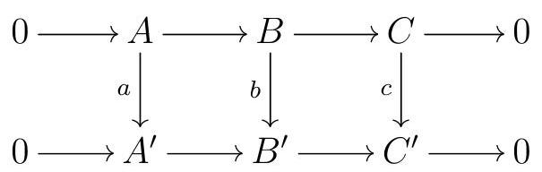
and chosen lifts of the original short exact sequences to projective resolutions, there are maps of complexes such that
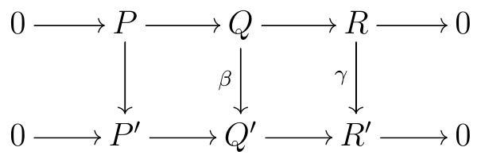
commutes. Our derived functors \(L_{i} F\) will preserve these maps of complexes and the commutativity of the diagram above, so we get commutative diagrams
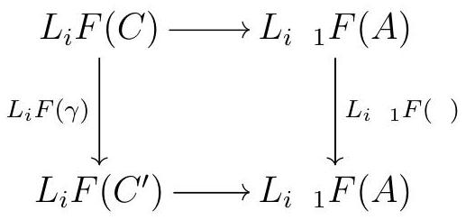
for each \(i\text{.}\) First, notice that we know that \(a, b\text{,}\) and \(c\) can be lifted to maps of complexes by Theorem 5.21, and that any two lifts of each \(a, b\text{,}\) or \(c\) are unique up to homotopy. So let’s start by fixing lifts of \(a\) and \(\gamma\) of \(c\text{,}\) and we will construct an appropriate lift \(\beta\) of \(b\text{.}\) Since the short exact sequences
\begin{equation*}
0 \longrightarrow P_{n} \longrightarrow Q_{n} \longrightarrow R_{n} \longrightarrow 0
\end{equation*}
split for each \(n\text{,}\) we might as well assume that \(Q_{n}=P_{n} \oplus R_{n}\) and that the arrows \(P \rightarrow Q\) and \(Q \rightarrow R\) are given by the canonical arrows to and from the product \(\equiv\) coproduct in each homological degree. We cannot, however, assume \(Q=P \oplus R\) as complexes, only that \(Q_{n}=P_{n} \oplus R_{n}\) in each homological degree \(n\text{.}\) The commutativity of
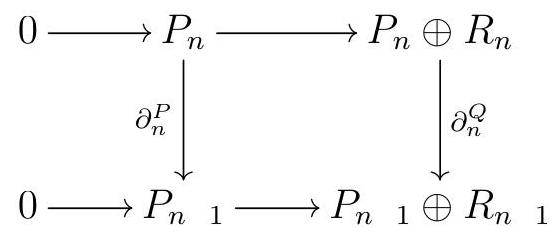
does imply that \(\partial^{Q}(P) \subseteq P\text{,}\) so we can say that \(\partial^{Q}\) is of the form
\begin{equation*}
\partial_{n}^{Q}=\left(\begin{array}{cc}
\partial_{n}^{P} & \mu_{n} \\
0 & \partial_{n}^{R}
\end{array}\right)
\end{equation*}
for each \(n\text{.}\) Since this is a differential, we have
\begin{equation*}
\left(\partial_{n}^{Q}\right)^{2}=0 \Longrightarrow \partial_{n}^{P}{ }_{1} \mu_{n}+\mu_{n}{ }_{1} \partial_{n}^{R}=0
\end{equation*}
Similarly, all this applies to \(\partial_{n}^{Q^{\prime}}\text{,}\) which must be of the form
\begin{equation*}
\partial_{n}^{Q^{\prime}}=\left(\begin{array}{cc}
\partial_{n}^{P^{\prime}} & \mu_{n}^{\prime} \\
0 & \partial_{n}^{R^{\prime}}
\end{array}\right)
\end{equation*}
We claim that we can define \(\beta_{n}=\left(\begin{array}{cc}n & \nu_{n} \\ 0 & \gamma_{n}\end{array}\right)\) for each \(n\) such that \(\beta\) is a map of complexes, meaning
\begin{equation*}
\partial_{n}^{Q^{\prime}} \beta_{n}=\beta_{n \quad 1} \partial_{n}^{Q}
\end{equation*}
Writing the corresponding products of matrices, we must have
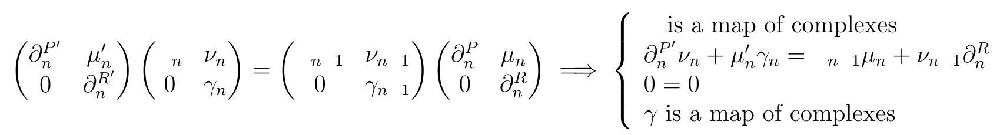
The only nontrivial statement we want to guarantee is that \(\partial_{n}^{P^{\prime}} \nu_{n}+\mu_{n}^{\prime} \gamma_{n}={ }_{n}{ }_{1} \mu_{n}+\nu_{n}{ }_{1} \partial_{n}^{R}\text{.}\) We can solve this inductively for each \(n\text{,}\) and construct an appropriate \(\nu_{n}\) inductively. Given \(\nu_{n}\text{,}\) set
\begin{equation*}
{ }_{n}:={ }_{n}{ }_{1} \mu_{n}+\nu_{n}{ }_{1} \partial_{n}^{R} \quad \mu_{n}^{\prime} \gamma_{n}
\end{equation*}
We want to construct \(\nu_{n}\) such that \(R_{n} \stackrel{\nu_{n}}{\longrightarrow} P_{n}^{\prime} \quad\) commutes, assuming we have constructed
\(\nu_{n}\) 1. First, we claim that \(\partial_{n}^{P^{\prime}}{ }_{1}{ }_{n}=0\text{.}\)
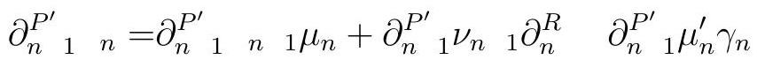
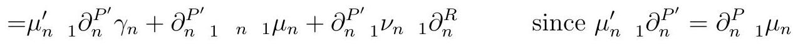
By induction,
\begin{equation*}
\partial_{n}^{P_{1} \nu_{n}{ }_{1}}+\mu_{n{ }_{1}}^{\prime} \gamma_{n}{ }_{1}={ }_{n}{ }_{2} \mu_{n \quad 1}+\nu_{n}{ }_{2} \partial_{n}^{R}{ }_{1}^{R} \text {. }
\end{equation*}
Using this to replace \(\partial_{n}^{P^{\prime}}{ }_{1} \nu_{n}{ }_{1}\) in the equation above, we get
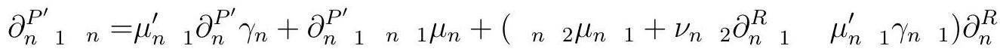
\begin{equation*}
\begin{aligned}
& ={ }_{n}{ }_{2}{ }_{2} \mu_{n}{ }_{1} \partial_{n}^{R}+\partial_{n}^{P^{\prime}{ }_{1}}{ }_{n}{ }_{1}{ }_{1} \mu_{n}+\nu_{n}{ }_{2} \partial_{n}{ }_{1}^{R} \partial_{n}^{R} \quad \mu_{n}^{\prime}{ }_{1}\left(\partial_{n}^{P^{\prime}} \gamma_{n}+\gamma_{n}{ }_{1} \partial_{n}^{R}\right) \\
& ={ }_{n}{ }_{2} \partial_{n}{ }_{1}{ }_{1} \mu_{n}+\partial_{n}^{P^{\prime}{ }_{1}}{ }_{n}{ }_{1}{ }_{1} \mu_{n}+\nu_{n}{ }_{2} \partial_{n}{ }_{1}{ }_{1} \partial_{n}^{R} \quad \mu_{n}^{\prime}{ }_{1}\left(\partial_{n}^{P^{\prime}} \gamma_{n}+\gamma_{n}{ }_{1} \partial_{n}^{R}\right)
\end{aligned}
\end{equation*}
We showed above that \(\partial_{n}^{P^{\prime}} \gamma_{n}+\gamma_{n}{ }_{1} \partial_{n}^{R}=0\text{.}\) Moreover, \(\partial_{n}^{R}{ }_{1} \partial_{n}^{R}=0\text{.}\) We conclude that
\begin{equation*}
\begin{array}{rlr}
\partial_{n{ }_{1}{ }_{n}}^{P^{\prime}} & ={ }_{n}{ }_{2} \partial_{n}^{P}{ }_{1} \mu_{n}+\partial_{n}^{P_{1}}{ }_{1}{ }_{n}{ }_{1} \mu_{n} & \\
& ={ }_{n}{ }_{2} \partial_{n}^{P}{ }_{1} \mu_{n}+{ }_{n}{ }_{2} \partial_{n}^{P^{\prime}} \mu_{n} & \text { since } \quad \text { is a map of complexes } \\
& ={ }_{n}{ }_{2}\left(\partial_{n}^{P}{ }_{1} \mu_{n}+\partial_{n}^{P^{\prime}} \mu_{n}\right) & \\
& =0 & \text { since } \partial_{n}^{P}{ }_{1} \mu_{n}+\partial_{n}^{P^{\prime}} \mu_{n}=0 .
\end{array}
\end{equation*}
So this concludes the proof that \(\partial_{n}^{P^{\prime}}{ }_{1}{ }_{n}=0\text{.}\) Therefore, \({ }_{n}\) must factor through the \(\operatorname{ker} \partial_{n}^{P^{\prime}}{ }_{1}\) :
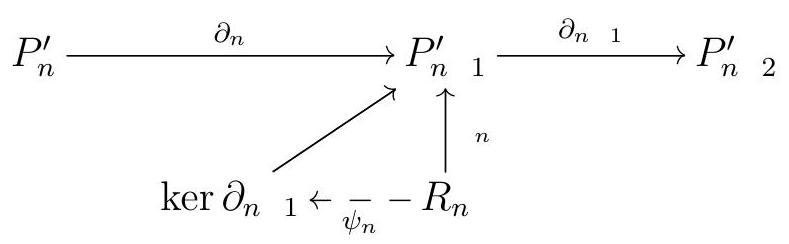
On the other hand, \(P^{\prime}\) is a resolution and thus exact, so \(\operatorname{im} \partial_{n}=\operatorname{ker} \partial_{n} 1\text{,}\) and \(\partial_{n}\) factors through \(\operatorname{ker} \partial_{n}{ }_{1}\) as
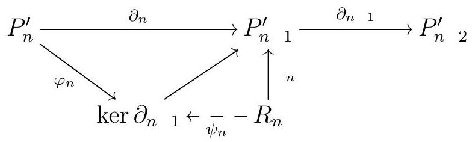
via some epi \(\varphi_{n}\text{.}\) Finally, \(R_{n}\) is projective, so there exists \(\nu_{n}\) such that
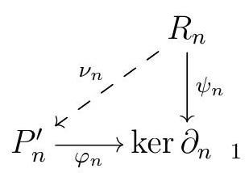
commutes - this was the \(\nu_{n}\) we were searching for.
Theorem 6.7.
Let \(T_{i}: R \operatorname{Mod} \rightarrow S\) Mod be a sequence of additive covariant functors, and \(F: R \operatorname{Mod} \rightarrow S\) Mod a right exact functor. Suppose that the following hold:
- For every short exact sequence \(0 \longrightarrow A \longrightarrow B \longrightarrow C \longrightarrow 0\) in \(R\) Mod, we get a natural long exact sequence\begin{equation*} \cdots \longrightarrow T_{2}(C) \longrightarrow T_{1}(A) \longrightarrow T_{1}(B) \longrightarrow T_{1}(C) \longrightarrow T_{0}(A) \longrightarrow T_{0}(B) \longrightarrow T_{0}(C) \longrightarrow 0 \end{equation*}
- \(T_{0}\) is naturally isomorphic to \(F\text{.}\)
- \(T_{n}(P)=0\) for every projective \(P\) and all \(n \geqslant 1\text{.}\)
Then \(T_{n}\) is naturally isomorphic to \(L_{n} F\) for all \(n \geqslant 0\text{.}\)
Proof.
We are going to show that \(T_{n}\) is naturally isomorphic to \(L_{n} F\) by all \(n\text{.}\) The statement for \(n=0\) is one of our assumptions. When \(n=1\text{,}\) fix an \(R\)-module \(M\text{,}\) and consider a short exact sequence
\begin{equation*}
0 \longrightarrow K \stackrel{f}{\longrightarrow} P \longrightarrow M \longrightarrow 0
\end{equation*}
with \(P\) projective. By assumption (1), we get a long exact sequence on the \(T_{i}\text{,}\) and by (2), there exist isomorphisms \(\tau_{0}\) such that the following is a commutative diagram:
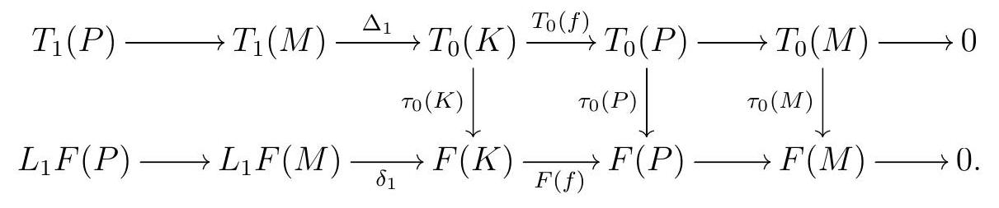
By \((3), T_{1}(P)=0\text{,}\) and \(L_{1} F(P)=0\) by construction. The exactness of each row now implies that \(\Delta_{1}\) and \(\delta_{1}\) are both injective. Moreover,
\begin{equation*}
\begin{array}{rlr}
F(f) \tau_{0}(K) \Delta_{1} & =\tau_{0}(P) T_{0}(f) \Delta_{1} & \text { by commutativity of the diagram } \\
& =0 & \text { since } T_{0}(f) \Delta_{1}=0 .
\end{array}
\end{equation*}
so the image of \(\tau(k) \Delta_{1}\) is contained in \(\operatorname{ker} F(f)=\operatorname{im} \delta_{1}\text{.}\) Define \(\tau_{1}(M): T_{1}(M) \rightarrow L_{1} F(M)\) as follows: we send each \(a \in T_{1}(M)\) to the unique \(b \in L_{1} F(M)\) such that \(\delta_{1}(b)=\tau_{0}(K) \Delta_{1}(a)\text{.}\) This is a homomorphism of \(R\)-modules because so are \(\delta_{1}, \tau_{0}(K)\text{,}\) and \(\Delta_{1}\text{.}\) Moreover, since \(\tau_{0}(K)\) is an isomorphism and \(\Delta_{1}\) is injective, the composition \(\tau_{0}(K) \Delta_{1}\) is injective. As a consequence, \(\tau_{1}(M)\) is injective. On the other hand, we claim that \(\tau_{1}(M)\) is also surjective. Given any \(b \in L_{1} F(M)\text{,}\) since \(\tau_{0}(K)\) is an isomorphism there exists \(c \in T_{0}(K)\) such that \(\tau_{0}(K)(c)=\delta_{1}(b)\text{.}\) Thus
\begin{equation*}
\begin{array}{rlr}
\tau_{0}(P) T_{0}(f)(c) & =F(f) \tau_{0}(K)(c) & \text { by commutativity } \\
& =F(f) \delta_{1}(b) & \text { since } \tau_{0}(K)(c)=\delta_{1}(b) \\
& =0 & \text { since the bottom row is a complex }
\end{array}
\end{equation*}
Since \(\tau_{0}(P)\) is an iso, we must have \(c \in \operatorname{ker}\left(T_{0}(f)\right)=\operatorname{im} \Delta_{1}\text{.}\) Thus we can choose \(a \in T_{1}(M)\) such that \(\Delta_{1}(a)=c\text{,}\) which implies that \(\tau_{1}(M)(a)=b\text{.}\) Therefore, \(\tau_{1}(M)\) is an isomorphism.
This shows that \(T_{1}(M) \cong L_{1} F(M)\text{.}\) Now let \(n \geqslant 1\text{,}\) and consider the diagram with exact rows
\begin{equation*}
\begin{gathered}
T_{n+1}(P) \longrightarrow T_{n+1}(M) \stackrel{\Delta_{n} 1}{\longrightarrow} T_{n}(K) \longrightarrow T_{n}(P) \\
L_{n+1} F(P) \longrightarrow L_{n+1} F(M) \underset{\delta_{n \quad 1}}{\longrightarrow} L_{n} F(K) \longrightarrow L_{n} F(P)
\end{gathered}
\end{equation*}
By (3), \(T_{n+1}(P)=0=T_{n}(P)\text{,}\) and by construction \(L_{n+1} F(P)=0=L_{n} F(P)\text{.}\) Therefore, \(\Delta_{n+1}\) and \(\delta_{n+1}\) are isomorphisms. Since \(\tau_{n}(K)\) is also an isomorphism, we conclude that \(T_{n+1}(M) \cong L_{n+1} F(M)\text{.}\) Therefore, \(T_{n}(M) \cong L_{n} F(M)\) for all \(n\text{.}\)
It remains to show that these isomorphisms are natural, that is, that any \(R\)-module map \(f: M \rightarrow N\) gives rise to commutative diagrams
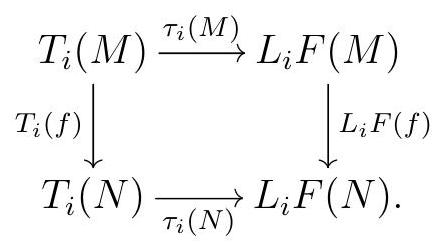
We will prove this by induction on \(i\text{.}\) First, note that the commutativity of the square holds for \(i=0\) by (2). Let \(i \geqslant 1\text{.}\) Fix projectives \(P\) and \(Q\) and short exact sequences
\begin{equation*}
0 \longrightarrow K \longrightarrow P \longrightarrow M \longrightarrow 0 \quad \text { and } \quad 0 \longrightarrow C \longrightarrow Q \longrightarrow N \longrightarrow
\end{equation*}
Since \(Q\) is projective and \(Q \rightarrow N\) is surjective, \(f\) lifts to a map \(g: P \rightarrow Q\text{.}\) Moreover, an argument similar to the one we used above shows that we can define a map \(h\) giving a commutative diagram
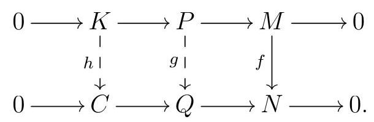
Now consider the following diagram:
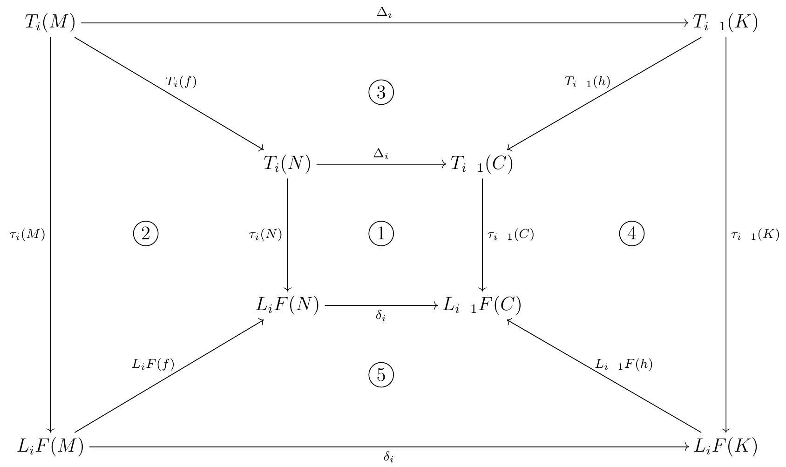
The big square and (1) commute by definition of \(\tau_{i}\text{.}\)
The square (3) commutes because we assumed in (1) that \(T_{i}\) gives rise to long exact sequences which are natural.
The square (5) commutes because \(L_{i} F\) gives rise to natural long exact sequences, by Theorem 6.6.
The square (4) commutes by induction hypothesis.
Our goal is to show that (2) commutes. First, we claim that
\begin{equation*}
\delta_{i} \circ \tau_{i}(N) \circ T_{i}(f)=\delta_{i} \circ L_{i} F(f) \circ \tau_{i}(M)
\end{equation*}
Indeed, using the commutativity of the various other parts of the diagram, we get
\begin{equation*}
\begin{array}{rlr}
\delta_{i} \circ \tau_{i}(N) \circ T_{i}(f) & =\tau_{i}{ }_{1}(C) \circ \Delta_{i} \circ T_{i}(f) & \text { by commutativity of (1) } \\
& =\tau_{i}{ }_{1}(C) \circ T_{i}{ }_{1}(h) \circ \Delta_{i} & \text { by commutativity of (3) } \\
& =L_{i}{ }_{1} F(h) \circ \tau_{i}{ }_{1}(K) \circ \Delta_{i} & \text { by commutativity of (4) } \\
& =L_{i}{ }_{1} F(h) \circ \delta_{i} \circ \tau_{i}(M) & \text { by commutativity of the big square } \\
& =\delta_{i} \circ L_{i} F(f) \circ \tau_{i}(M) & \text { by commutativity of (5). }
\end{array}
\end{equation*}
On the other hand, the long exact sequence for \(L_{i} F\) from Theorem 6.6 says that
\begin{equation*}
L_{i} F(Q) \longrightarrow L_{i} F(N) \stackrel{\delta_{i}}{\longrightarrow} L_{i}{ }_{1} F(C)
\end{equation*}
is exact, but since \(i \geqslant 1\) and \(Q\) is projective we have \(L_{i} F(Q)=0\) by Remark 6.3. But the exactness of
\begin{equation*}
0 \longrightarrow L_{i} F(N) \stackrel{\delta_{i}}{\longrightarrow} L_{i}{ }_{1} F(C)
\end{equation*}
says that \(\delta_{i}\) is injective. Therefore,
\begin{equation*}
\delta_{i} \circ \tau_{i}(N) \circ T_{i}(f)=\delta_{i} \circ L_{i} F(f) \circ \tau_{i}(M) \Longrightarrow \tau_{i}(N) \circ T_{i}(f)=L_{i} F(f) \circ \tau_{i}(M),
\end{equation*}
and 2 commutes, as desired.
There are versions of this theorem for the three remaining cases as well; we record one of them here:
Theorem 6.8.
Suppose \(T_{i}: R \operatorname{Mod} \rightarrow S\) Mod is a sequence of additive covariant functors and \(F: R \operatorname{Mod} \rightarrow S\) Mod a left exact functor such that
- For every short exact sequence \(0 \longrightarrow A \longrightarrow B \longrightarrow C \longrightarrow\) in \(R\) Mod, we get a long exact sequence\begin{equation*} 0 \longrightarrow T_{0}(A) \longrightarrow T_{0}(B) \longrightarrow T_{0}(C) \longrightarrow T_{1}(A) \longrightarrow T_{1}(B) \longrightarrow T_{1}(C) \longrightarrow \cdots \end{equation*}
- \(T_{0}\) is naturally isomorphic to \(F\text{.}\)
- \(T_{n}(E)=0\) for every injective \(E\) and all \(n \geqslant 1\text{.}\)
Then \(T_{n}\) is naturally isomorphic to \(R^{n} F\) for all \(n\text{.}\)
We leave the proof of this and the other two cases as an exercise.